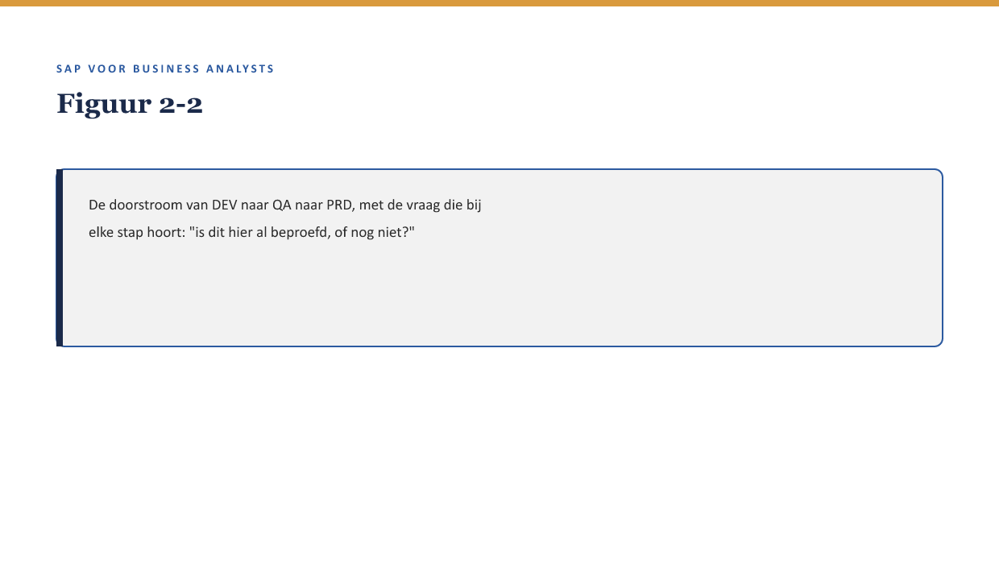
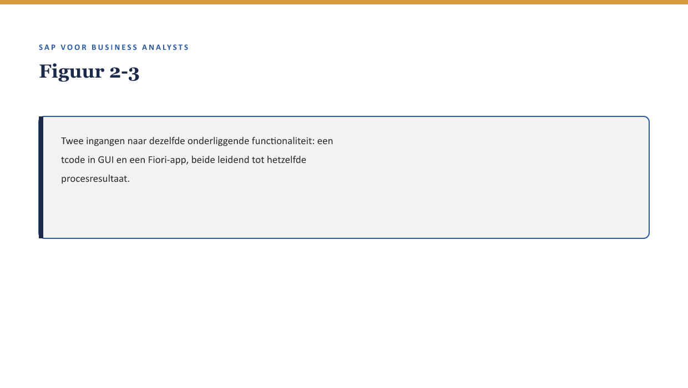
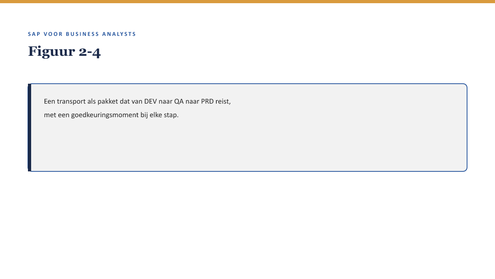

Deel 2 — Systeemlandschap & navigatie
Slidedeck · Niveau 1 Fundamenten · Cursus SAP voor Business Analysts · Ductus
Slidetypen conform de Ductus-sjabloonfuncties: titleSlide, sectionSlide, bulletsSlide, statementSlide, quoteSlide, tableSlide, figureSlide, opdrachtSlide.
Slide 1 — titleSlide
Systeemlandschap & navigatie Deel 2 · Niveau 1 Fundamenten Cursus SAP voor Business Analysts
Slide 2 — bulletsSlide
Wat we vandaag doen
- Sannes eerste inlog — en de vraag die zij eerst stelt
- DEV, QA, PRD en de sandbox — vier omgevingen, één landschap
- Transactiecodes en Fiori — twee ingangen, vaak dezelfde functionaliteit
- Transporten — hoe een wijziging van DEV naar PRD reist
Slide 3 — statementSlide
“Is dit nou het systeem, of een kopie van het systeem?”
De eerste vraag van dit deel.
Slide 4 — figureSlide
Slide 5 — sectionSlide
Systeemlagen
Slide 6 — figureSlide

Slide 7 — tableSlide
Vier omgevingen
| Omgeving | Doel |
|---|---|
| Sandbox | verkennen, geïsoleerd, standaardgedrag |
| DEV | bouwen, eerste test |
| QA | acceptatietest, productielijkende data |
| PRD | operationeel gebruik |
Slide 8 — quoteSlide
Wat je in een sandbox ziet, is nooit een garantie voor wat je straks in Meridiaans eigen DEV-omgeving tegenkomt.
— Kernzin, reader §3.2
Slide 9 — opdrachtSlide
Opdracht 2.1 — Welke omgeving is dit?
Vier situaties: sandbox, DEV, QA of PRD? a. Priya bouwt een eerste configuratie b. Sanne test standaard FS-PM-gedrag c. Marijke voert een acceptatietest uit d. Een polishouder wijzigt zijn adres
Slide 10 — sectionSlide
Tcode of Fiori-app
Slide 11 — figureSlide

Slide 12 — bulletsSlide
Twee ingangen
- Transactiecode — klassieke GUI, letter-cijfercombinatie
- Fiori-app — webgebaseerd, taakgericht, tegel op een startscherm
- Vaak dezelfde onderliggende logica, andere ingang
- Verwacht een mengvorm in de praktijk, geen harde knip
Slide 13 — opdrachtSlide
Opdracht 2.3 — Tcode of Fiori-app?
Vier aanwijzingen — welke route, of niet met zekerheid te zeggen? a. “Ga naar VA01” b. Een taakgerichte tegel op een webscherm c. “Klik op het polisicoon in het startscherm” d. Een viercijferige code die begint met een letter
Slide 14 — sectionSlide
Transporten
Slide 15 — figureSlide

Slide 16 — statementSlide
“Dat staat al in DEV.”
Betekent dat: staat het ook in productie?
Slide 17 — quoteSlide
“Het staat in het systeem” is een onvolledige uitspraak zolang je niet weet in welk systeem.
— Kernzin, reader §5
Slide 18 — opdrachtSlide
Opdracht 2.4 — Een transport volgen
De regel staat sinds gisteren in DEV, vandaag goedgekeurd voor QA. a. Staat hij al in productie? b. Welke stap moet nog? c. Is “niet gevonden in PRD” morgen een storing?
Slide 19 — statementSlide
“De nieuwe uitzonderingsregel werkt niet.”
Wat vraag je, vóórdat dit een probleem is?
Slide 20 — opdrachtSlide
Opdracht 2.5 — Bevindingen correct duiden
Bedenk drie vragen die Sanne aan Astrid zou moeten stellen vóór deze melding als probleem wordt behandeld.
Slide 21 — bulletsSlide
Samenvatting in vijf zinnen
- Vier omgevingen: sandbox (verkennen), DEV (bouwen), QA (accepteren), PRD (gebruiken)
- Een sandbox toont standaardgedrag, geen voorspelling van de eigen inrichting
- Tcode en Fiori-app: twee ingangen, vaak dezelfde functionaliteit
- Een transport verplaatst wijzigingen tussen omgevingen, met goedkeuringsmomenten
- “Het staat in het systeem” is pas bruikbaar zodra je weet in welk systeem
Slide 22 — titleSlide
Volgende deel Tabellen & Data Dictionary Deel 3